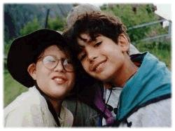

Organisation Mondiale du Mouvement Scout


-
Le menu détaillé
-
Foire au questions (FAQ)
-
Info animateurs


 Consulte notre menu détaillé:
Toutes les pages de ce site ont été conçues pour permettre aux membres d'un groupe scout d'apprendre en s'amusant, tous ensemble. Ces pages sont regroupées en 4 parties:
Informations
- 8 clefs
- Les médias
- Scoutisme et paix
- UNESCO
Principes et idées générales sur la Culture de la Paix. C'est juste un point de départ, une invitation aux scouts à partir à la découverte de la Culture de la Paix. Les exemples tirés de la vie quotidienne des scouts permettent d'illustrer les principes. Les scouts sont également invités à envoyer d'autres exemples pour illustrer ces principes.
Des informations sur l'engagement du Scoutisme pour la paix. Tout sur l'UNESCO et les activités organisées dans le cadre de l'An 2000, Année Internationale de la Culture de la Paix.
Activités
- Le jeu des mots manquants
- Le grand débat
- Le journal de la paix. Deviens reporter de la Culture de la Paix
Chacune de ces deux activités (Les mots manquants et Le grand débat) sont conçues pour permettre aux scouts de se familiariser avec les principes de la Culture de la Paix, au travers d'un jeu.
Le grand débat permet d'organiser un forum de discussion sur les principes de la Culture de la Paix dans votre groupe scout.
Le journal de la paix invite les scouts à devenir des reporters de la paix. Il leur permet de relier ces principes de la Culture de la Paix à leurs propres activités scoutes et à leur environnement immédiat. Le journal de la paix reprendra des reportages sur les initiatives scoutes pour faire vivre la Culture de la Paix partout dans le monde.
Aide
- Le menu détaillé
- Foire au questions (FAQ)
- Info animateurs
Pour en savoir plus sur le site.
Liens
- Des liens à propos de la Culture de la Paix
Quelques liens pour accéder à d'autres sites traitant de la Culture de la Paix.